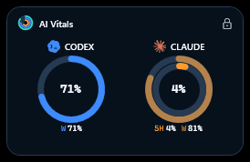
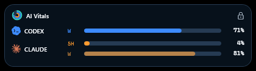
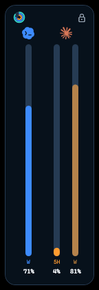
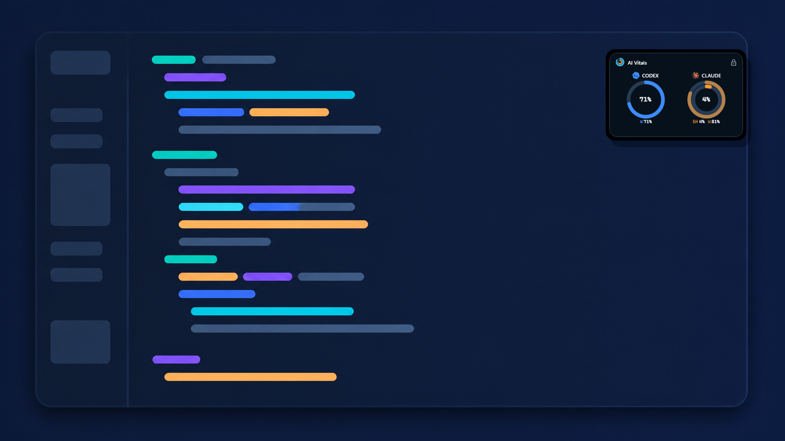

WINDOWS TRAY · LOCAL-FIRST
Your AI quotas, always in sight.
AI Vitals reads Codex and Claude Code usage from your own machine and shows it in an always-on-top widget, a tray popup, and a full dashboard. No account, no backend, no telemetry.
No installer released yet — clone the repo and run it with .NET 9.
-
Week 71%
RESETS IN CLOCK —
-
5 hours 4%
RESETS IN CLOCK —
-
Week 81%
RESETS IN CLOCK —
WIDGET
Three layouts. Pick the one your desk has room for.
The widget stays on top, can be locked in place or made click-through, and returns with Ctrl+Shift+U if it ends up on a monitor you unplugged. Switch layout here to see each capture at its real size.




Rings: one arc per quota window, longest outside, shortest inside.
TRAY AND DASHBOARD
One icon in the notification area does the whole job.
Left click for status you can read in a second. Right click for widget, layout and appearance controls. Double click the widget for the full dashboard with history and export.
WHAT IT DOES
Built like an instrument, not a dashboard product.
-
Real provider data
Codex through its local app server, Claude Code through its local OAuth usage endpoint. Only what each provider publishes.
-
History and export
Local SQLite history with provider and date filters. Export exactly what is on screen to CSV or JSON.
-
Stays out of the way
Lock the widget, make it click-through, snap it to any monitor, or bring it back with Ctrl+Shift+U.
PRIVACY
The interesting part is what never gets written down.
NEVER STORED
- Prompts and responses
- Transcripts and conversation content
- Project paths and session titles
- Provider credentials
- Raw session identifiers
- Analytics of any kind
KEPT ON YOUR MACHINE
- Quota windows and usage counters
- Preferences, theme, language and widget position
- Session identifiers, pseudonymized locally with HMAC
%LOCALAPPDATA%\AIVitals
No account, no backend, no update ping. Raw provider payloads are discarded once the allowlisted fields are read.
RUN IT
Two commands from clone to tray.
Windows 10 22H2 or Windows 11, .NET SDK 9, and Codex or Claude Code signed in locally for live data. There is no packaged installer yet.
-
Clone
git clone https://github.com/AlexAdiaconitei/ai-vitals.git -
Run
dotnet run --project src/AIVitals.App/AIVitals.App.csproj
AI Vitals starts in the notification area. Left-click the tray icon for status, right-click for the widget and appearance controls.
WHO BUILT THIS
Alex Adiaconitei
Software engineer specialized in backend development with Java and Spring Boot, comfortable working with JavaScript and Python. I enjoy building personal projects to keep learning, with a growing interest in infrastructure.
- Backend Software Engineer
- Java, Spring Boot, JavaScript, Python
- Remote